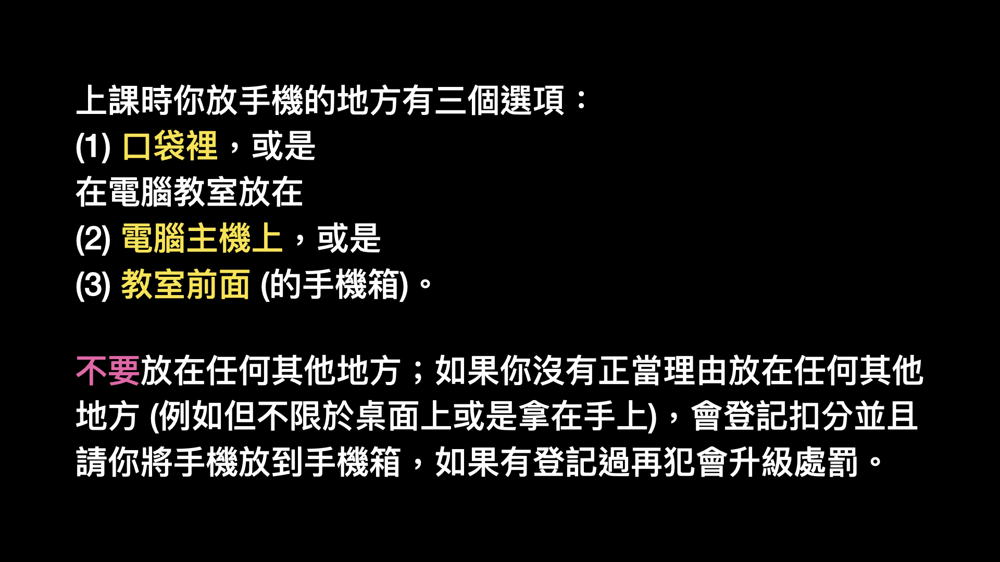

歡迎來到黃老師科技課程
生活科技 (高一)
科技應用 (高三)
成績計算與教室常規：
請詳細閱讀以下每一條說明，如果有違反規定的會扣分和請你做愛校服務。
成績計算：70~80% 課程學習成績，作業成績原則上按照該活動所花的時間比例，或依據重要程度再調整。
成績主要在 Google Classroom 作業處理
20~30% 為老師視學習態度、常規遵守 (例如守時)、互助共好、協助課務、行為品格等裁量給分。
成績計算從 0 分開始，以每次上課的學習表現獲取分數。
請嚴格遵守防疫相關規定，口罩全程戴滿戴好，平時勤用肥皂洗手，不碰眼鼻口，注意個人衛生，不要共飲、共食。
身體不舒服請在家休息，公病假缺課不會處罰，
但是每次上課都會有進度，也可能會有當天的隨堂評量成績，
缺席的話就無法完成進度或評量，務必在下一次上課前自己找老師或同學補齊。
上課時做課程內的事，看其他科目或是社團課外讀物、
做其他作業或是活動、玩遊戲、看影片、看漫畫、睡覺及其他非課程相關的事都在禁止之列。
若有違背，除扣分、以愛校服務懲處外，該階段的評量先登錄為 0 分，
若之後作業有完成繳交或重新批改酌予給分。
課程準時開始，到專科教室 (電腦教室或 B1 創客教室) 上課下課前安排值日生整理環境。
專科教室務必維持環境整潔 (嚴格禁止帶食物或含糖飲料)，絕對不能留下東西或垃圾，橡皮擦屑用衛生紙包好帶走。
揭「無症狀感染」怎傳播 微飛沫20分鐘才散 驚！-李四端的雲端世界
有困難、問題或意見請務必提出溝通：上課時、或用 Google Classroom 留言、
我的課表：有課之間通常都會在電腦教室 4
作業、專題一定要誠實自己做，做了多少就說多少：
* 和這個原則違背的瑕疵是各位在求學過程以及以後的職涯中不能有的 *
※※※ 講義點開 • 上課專心 ※※※

112 大學入學
「進入第二階段指定項目甄試後，大學教授是無法看到參加甄試的考生的學測成績的」
黃◯曜 (個人申請錄取清大資工甲) 111 學年度建中備審資料經驗分享
page 4：大數據應用專題、page 73：自製 8-bit CPU
清大各科系的甲組有公費到國外交換一年的待遇。黃同學自述一階分數不是很高，但備審資料讓他在二階取得高分。
當你從長滿果子的樹上下來，走到溫暖的森林邊緣，面對酷惡的沙漠時，你會立刻認識到眼前的危險，以及身後的安全，再往前走將是不智的！
於是你沒有去發現如何取火的需求；這是你甜蜜的負擔，你會體認到應該要好好珍惜它。
不過，孩子，要登上下一座更高的山峰之前，你還是得先下這座山。